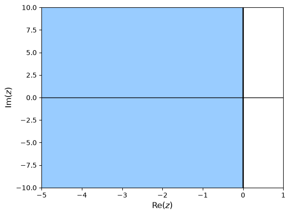

4.6. Stability exercises#
Exercise 4.1
Determine the stability function of the following Runge-Kutta method
Solution
Computing the ceofficients
therefore the stability function is
Exercise 4.2
Determine the stability function of the following Runge-Kutta method. Is this an A-stable method?
Solution
Determining the stability function
The roots of \(Q(z)\) are \( 3 \pm \sqrt{3}i\) so condition A is satisfied.
so condition B is also satisfied, so this is an A-stable method.
Exercise 4.3
Plot the region of absolute stability for the fourth-order Gauss-Legendre method. What does your plot suggest about the method?
Solution
Determining the stability function

This is an A-stable method.
Exercise 4.4
Calculate the stiffness ratio for the following system of ODEs.
For the Euler method with step size \(h = 0.05\), test the stability against both of the Eigenvalues of this system.
Solution
The eigenvalues are \(\lambda_1 = -20\) and \(\lambda_2 = -500\) so the stiffness ratio is
The stability function for the Euler method is \(R(z) = 1 + z = 1 + h \lambda\). For stability, \(|1 + h \lambda| \leq 1\).
For \(\lambda_1\), \(|R(-20 h)| = |1 - 20(0.05)| = 0 < 1\) so is stable.
For \(\lambda_2\), \(|R(-500 h)| = |1 - 500(0.05)| = 24 > 1\) so is unstable.